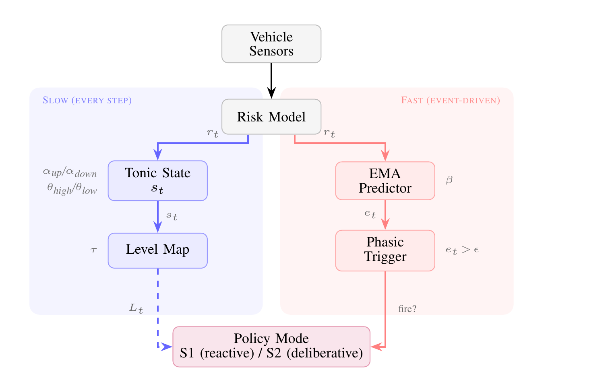
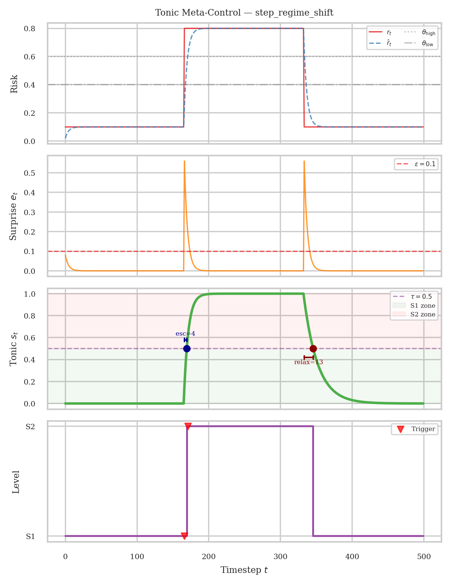
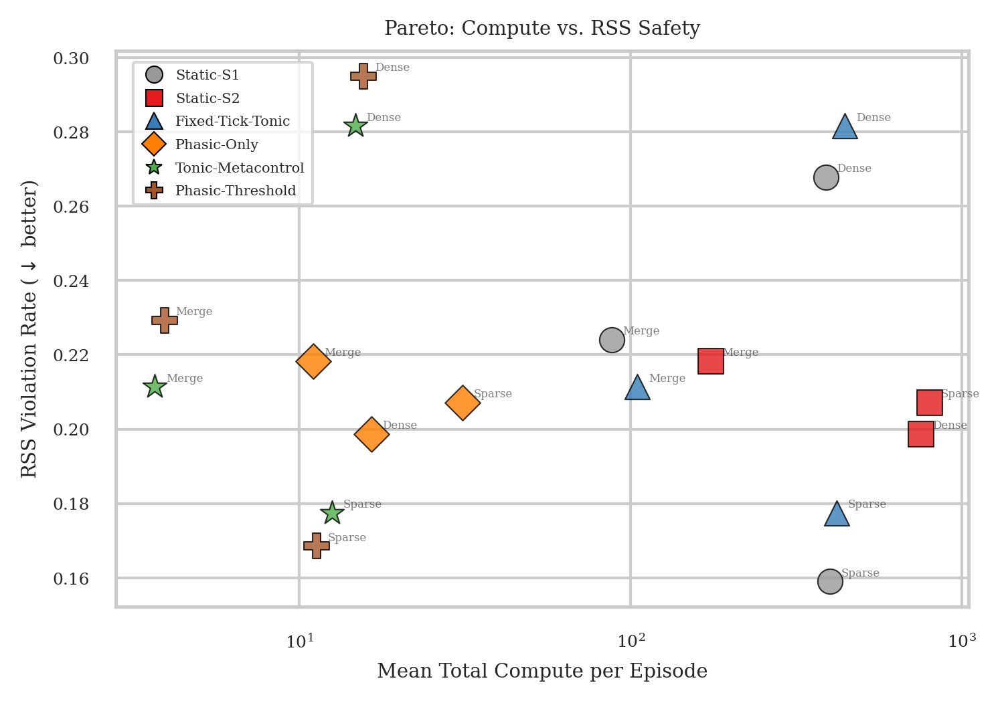
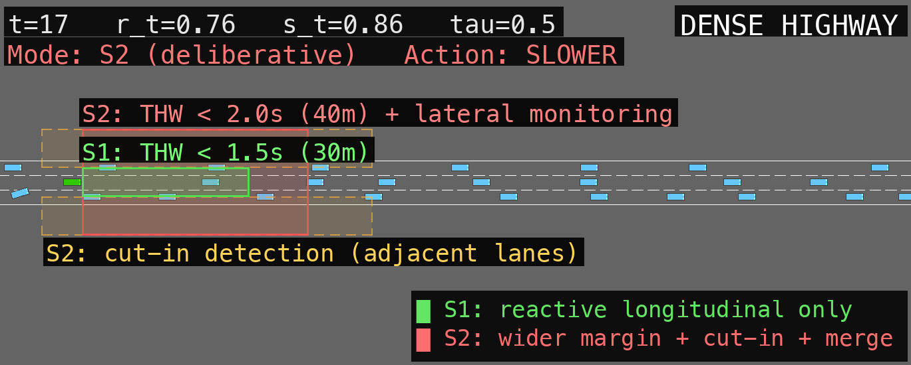
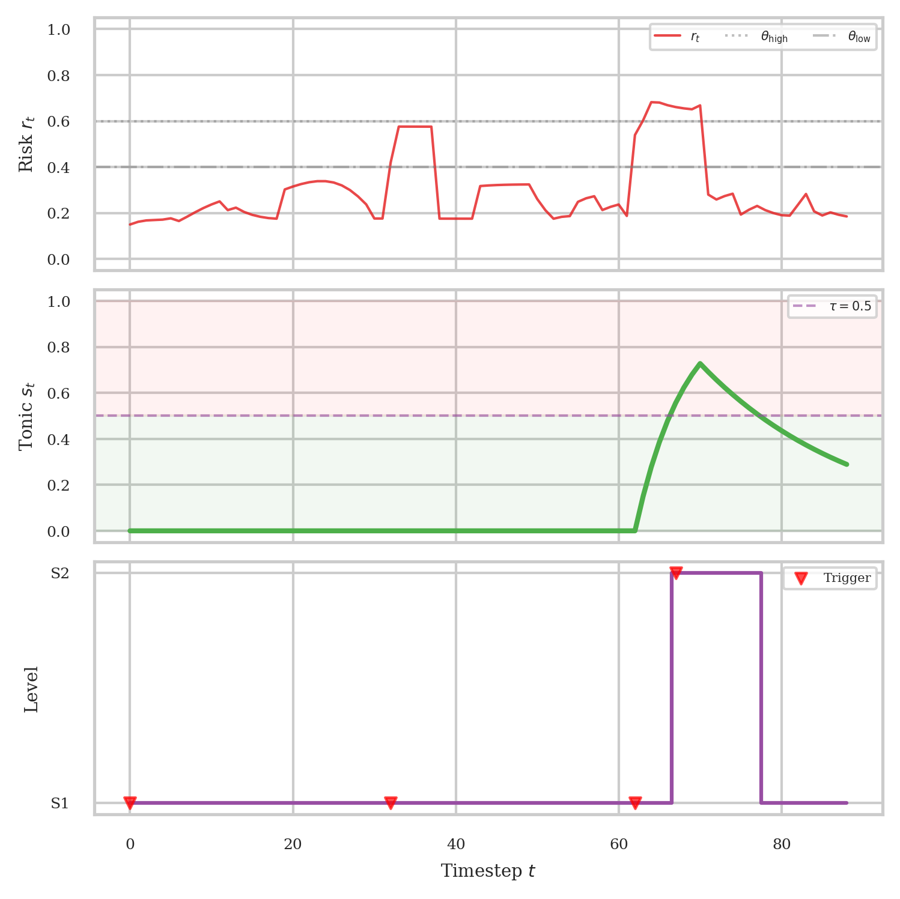

IEEE ITSC 2026
Tonic Meta-Control for Adaptive Safety-Compute
Allocation via Persistent Vigilance Dynamics
Kyungtae Han, Yitao Chen, Nejib Ammar, Onur Altintas
Toyota Motor North America R&D, InfoTech Labs
TL;DR
Autonomous vehicles need deep reasoning for safety, but compute is limited on embedded platforms. We introduce a persistent vigilance signal (tonic state) that tracks accumulated risk history and decides how much reasoning to allocate (System 1 vs. System 2), while a separate surprise trigger (phasic signal) decides when to reason at all. On synthetic benchmarks, this reduces compute 25–50% vs. phasic-only triggering. In closed-loop highway-env traffic (540 episodes), TM-C remains crash-free in dense scenarios where other methods incur 3–7% crash rates, using only 6–15 compute units per episode vs. 400–800 for static baselines.

System architecture. The tonic pathway (slow) sets deliberation depth; the phasic pathway (fast) triggers reasoning on surprise.

Tonic dynamics on a regime-shift scenario. The tonic state accumulates vigilance and maps risk regimes to S1/S2 levels.
Autonomous driving systems that incorporate deliberative reasoning modules, such as multi-step planners or large language models, face a fundamental resource allocation problem because safety demands deep inference under risk while embedded automotive platforms impose strict compute and latency budgets. We propose tonic meta-control, a mechanism that maintains a persistent vigilance state (the tonic signal, updated every timestep) via asymmetric piecewise dynamics with dead-band hysteresis. A dead-band guarantees exact state hold during boundary oscillations, providing formal guarantees on boundedness and monotonic transitions without continuous-integrator drift, and maps risk regimes to deliberation levels that govern compute allocation when rapid prediction-error surprise (the phasic signal) fires. On a synthetic testbench spanning five risk scenarios and in the highway-env driving simulator, tonic meta-control achieves 25–50% compute reduction versus phasic-only triggering, scaling to 46–52% under superlinear compute cost regimes. A memoryless threshold ablation isolates the contribution of accumulated vigilance history, confirming its advantage on transient and cyclic risk patterns. While reducing computational overhead on interactive traffic, tonic meta-control supports safety-aware autonomous reasoning on resource-constrained embedded platforms.
Key Results

Compute vs. RSS violation rate across 3 scenarios and 6 methods. TM-C (stars) achieves low compute with competitive safety.
How It Works
Tonic meta-control separates the when and how much of deliberative reasoning:
- 1 Tonic state (slow signal): a persistent vigilance level updated every timestep via piecewise integration with dead-band hysteresis. Determines System 1 vs. System 2 deliberation depth.
- 2 Phasic trigger (fast signal): fires when prediction-error surprise exceeds a threshold, after a cooldown period. Controls when to invoke reasoning.
- 3 Compute allocation: when triggered, the tonic-mapped level selects S1 (reactive, cheap) or S2 (deliberative, expensive), yielding Pareto-optimal safety/compute trade-offs.

S1 vs. S2 perception zones on dense highway. S1 monitors only the longitudinal gap; S2 widens margins and enables lane-change awareness.
Simulation Results

Highway merge scenario. The tonic signal rises during close interactions, escalating to S2 deliberation with wider safety margins.
Citation
@inproceedings{han2026tonic,
title = {Tonic Meta-Control for Adaptive Safety-Compute
Allocation via Persistent Vigilance Dynamics},
author = {Han, Kyungtae and Chen, Yitao and
Ammar, Nejib and Altintas, Onur},
booktitle = {2026 IEEE 29th International Conference on
Intelligent Transportation Systems (ITSC)},
year = {2026}
}